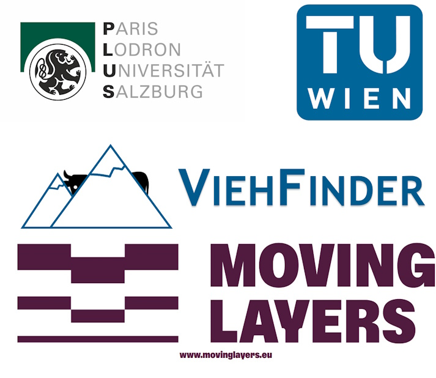

<h2 style="text-align: center;">Overview:</h2>

  <div style="display: flex; justify-content: center; align-items: center;"> 
    
  </div> 

<h2 style="text-align: center;"> Partners:</h2>
  <div style="display: flex; justify-content: center; align-items: center;"> 
    

 <ul>
  <li>Paris Lodron Universität Salzburg</li>
  <li>Technische Universität Wien</li>
  <li>ViehFinder</li>
  <li>Moving Layers</li>
</ul> 
  </div> 

<h2 style="text-align: center;"> Acknowledgements:</h2>
